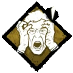
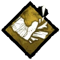
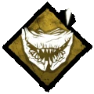

Evan MacMillan idolatrava seu pai. Não só porque ele era herdeiro de uma grande fortuna, mas sim pela maneira como ele administrava sua propriedade. Criado sob sua mão rigorosa, Evan tinha pego o cargo de comandar os trabalhadores com uma mão de ferro. A produção era sempre alta e a Fazenda MacMillan prosperava sob pai e filho.
Conforme a saúde mental de Archie MacMillan se desintegrava lentamente, Evan protegia-o do rebanho que queria um pedaço da fortuna. Não importa o que seu pai lhe pedisse, Evan faria.
Quando Archie MacMillan finalmente enlouqueceu, Evan tornou-se seu executor no que se tornaria conhecido como o pior assassinato em massa da história moderna. Eles nunca provaram que Evan liderou mais de cem homens nesses túneis escuros antes de detonar os explosivos e selá-los para o destino deles. O conto da Propriedade MacMillan é um conto de riqueza e poder que deu muito errado.
Quantas vítimas morreram pelas mãos do pai e de seu filho é desconhecida. Nenhum registro foi feito sobre o que aconteceu com Evan MacMillan. Seu pai é outro quebra-cabeça não resolvido, encontrado preso no porão fechado de seu próprio armazém - morto de fome e abandonado.
Estas habilidade são encontradas na teia de sangue do "O Caçador", para aumentar elas até o maxímo de 3 níveis. E para desbloquear essa perks para outros personagens é preciso prestigiar o "O Caçador":
- Para desbloquear as Perks nível 1 você precisa atingir o prestigio 1.
- Para desbloquear as Perks nível 2 você precisa atingir o prestigio 2.
- Para desbloquear as Perks nível 3 você precisa atingir o prestigio 3.
Uma vez conquistado o prestígio todos os outros Assassinos poderão usar as Perks ou encontra-las na teia de sangue, caso você tenha prestígio 1 ou 2.
| Ícones |
Nome |
Descrições |
|  |
Presença Desconcertante |
Sua presença atrai grande medo.
Sobreviventes dentro do seu Raio de Terror têm 6/8/10 % a mais de chance de ativar Testes de Perícia IconHelp skillChecks ao reparar, curar ou sabotar.
As zonas de sucesso são reduzidas em 40/50/60 %.
"Sua presença nos atinge."
Só precisa atingir o prestígio 1, para desbloquear a perk para outros assassinos no nível 1
|
|  |
Força Brutal |
Sua grande força permite que você destrua as defesas de sua presa.
Destrua Barricadas e danifique Geradores 10/15/20 % mais rápido.
"É mais do que músculos. Um poder obscuro motiva a fera."
Só precisa atingir o prestígio 1, para desbloquear a perk para outros assassinos no nível 1
|
|  |
Agitação |
Você fica animado na expectativa de enganchar sua presa.
Aumenta sua velocidade de movimento durante o transporte de corpos em 6/12/18 %. Ao transportar um corpo, seu Raio de Terror é aumentado em 6/8/12 metros.
"Em certo momento, a excitação de enganchar um de nós se torna mais importante do que o desejo de nos matar.""
Só precisa atingir o prestígio 1, para desbloquear a perk para outros assassinos no nível 1
|
Arma: O Cutelo
O Cutelo é a principal arma do caçador. Um cutelo brutal, feito por suas próprias mãos com os metais da mina.
- Se ele acertar um Sobrevivente, ele vai limpar o sangue em seu braço.
- O cutelo tem um raio de alcance relativamente pequeno.
Poder: Armadilha de Urso
A Armadilha de Urso é a arma secundária do Caçador: Armadilhas para Urso são encontradas em volta do mapa. Eles podem ser pegas e colocadas geralmente em qualquer lugar. As armadilhas não estão armadas até serem pegas e colocadas. O Caçador inicia o jogo com uma única armadilha nas mãos e só pode carregar uma de cada vez, a menos que esteja usando os complementos Saco do Caçador ou Mochila Costurada.
Depois de pressionar o ataque alternado (botão esquerdo), o caçador se abaixa e arma a armadilha, olhando diretamente para baixo, permitindo que os sobreviventes próximos corram ao redor dele sem serem vistos. No entanto, se um sobrevivente passar por cima de uma armadilha armada, a armadilha ativará e pegará uma de suas pernas, onde ficarão presos até que eles consigam se libertar, um companheiro sobrevivente venha libertá-los ou o Caçador voltar e pegá-los em seu ombro. Um sobrevivente preso fará muito barulho, alertando o Caçador e ficará visível para o Caçador através das paredes. As armadilhas também possuem uma aura que pode ser vista pelo caçador em qualquer momento e de qualquer alcance. Isso é útil para identificar quais armadilhas ainda não foram definidas, bem como armadilhas que foram desarmadas. Se o Caçador andar dentro do hitbox de uma de suas armadilhas, ele será pego pela própria armadilha e vai se abaixar para se libertar, mas a armadilha permanecerá na posição definida e nenhum efeito será imbuído no Assassino.
É muito comum os Caçadores experientes colocarem Armadilhas de Urso em locais de difícil identificação, como grama alta, em torno de um canto ou no lado de uma janela, para que os sobreviventes pisem nelas sem serem previamente alertados sobre sua posição.
- Imobiliza e fere Sobreviventes presos.
- Começa a partida com 2 Armadilha de Urso.
- 8 Armadilhas de Urso estão disponíveis aleatoriamente em todo o Mapa.